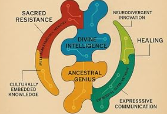
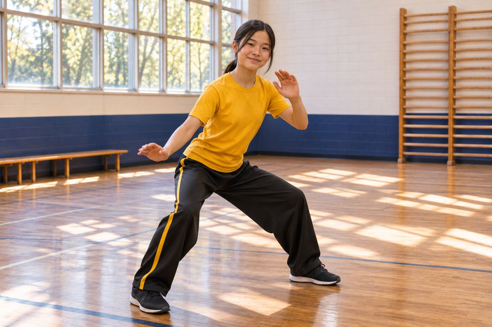

Principal and Special-Education Coordination
The principal will oversee school leadership and special-education coordination, including program implementation, compliance systems, service delivery, instructional quality, and staff accountability.

Rooted in Wisdom. Rising in Purpose.
Developing Organizational Structure
A student-centered leadership model connecting instructional quality, IEP implementation, documentation, family partnership, and responsible growth.
Development-stage notice: Roles described here are part of the school’s proposed operating model and will be finalized through hiring, governing documents, legal review, and applicable approval processes.
The principal will oversee school leadership and special-education coordination, including program implementation, compliance systems, service delivery, instructional quality, and staff accountability.
Assistant principals will be trained to support IEP planning and drafting, documentation, progress monitoring, meeting preparation, and other required support paperwork.
IEPs will remain collaborative team documents developed with families, educators, service providers, evaluators, administrators, and other required participants.
As enrollment grows, leadership assignments and special-education staffing will expand so responsibilities remain manageable, timely, and student-centered.
Founder Antoine L. Mason Sr. plans to serve as an English Language Arts instructor and will not serve as principal. His professional title will be updated after the EdD is formally conferred.
The separation between founder and principal roles is intended to support instructional focus, defined accountability, and professional school leadership.
Clear responsibilities, trained personnel, documented procedures, and timely response systems.
Family participation, required team members, progress monitoring, service documentation, and accessible communication.
Transparent development status, responsible financial practices, and policies approved through the school’s governing process.

Movement · Music · Community
Leadership will coordinate qualified Capoeira instruction, cultural attribution, accessible participation, and program review. Naming an educational influence does not establish an employment relationship or partnership.
Our schoolwide approach is inspired by Mestre Curtis Pierre’s work in New Orleans, with attention to fluid movement, balance, flexibility, music, and cultural history.